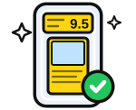
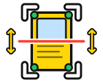

Même style que le logo de « Mon classeur » (contour noir, jaune Dropicards). Chaque logo est montré en grand, dans la rubrique de l'accueil, et en petit.
On inspecte la carte de près : coin vérifié (coche verte) sous la loupe. Le plus parlant pour « examiner l'état ».

La carte dans son étui avec sa note, comme au retour de gradation. Étiquette jaune Dropicards, aucune marque d'entreprise.

Le cadre du scan, le laser et les 4 coins contrôlés, avec les flèches du centrage. Montre que tout part d'une photo.
Une jauge du rouge au vert, aiguille vers la bonne note. Dit tout de suite « estimation ».